В папке laba2 находятся все необходимые файлы:
скриншоты, file.tar.gz, image.png,
index.php, index.html и
style.css.
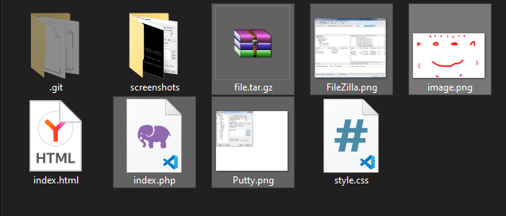
Скриншот 01: Содержимое папки laba2
Локальный репозиторий создан, все файлы добавлены, создан коммит. После связывания с удалённым репозиторием изменения успешно отправлены на GitHub.
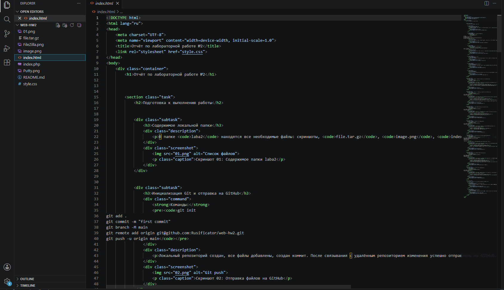
Скриншот 02: Отправка файлов на GitHub
git clone https://github.com/Nikita137297/web-hw2.git
mkdir -p ~/www/hw2
cp -r ~/web-hw2/* ~/www/hw2/
Репозиторий склонирован в домашнюю директорию, создан каталог
~/www/hw2, файлы скопированы в веб-доступное место.
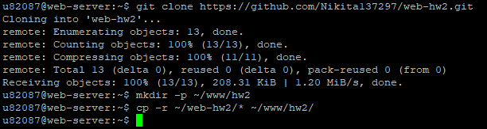
Скриншот 04: Клонирование и копирование
Все запросы для пунктов 1–7 были заранее набраны в текстовом редакторе для удобного копирования в PuTTY.
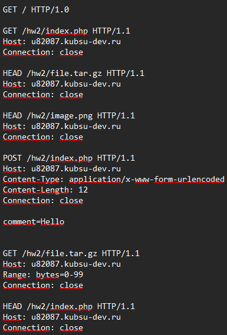
Скриншот 04: Запросы в блокноте
Для отправки запросов используется PuTTY в режиме
Raw (прямое TCP-соединение). Адрес:
u82087.kubsu-dev.ru, порт 80.
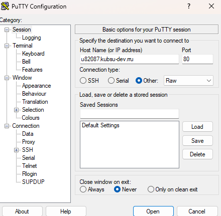
Скриншот 05: Конфигурация PuTTY
После открытия соединения появляется пустое окно, готовое для вставки HTTP-запросов (правая кнопка мыши).
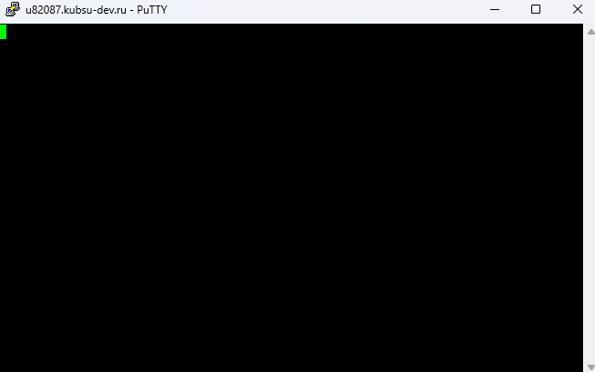
Скриншот 06: Окно PuTTY ожидает запрос
GET / HTTP/1.0Что делает: Запрос корневой директории сайта по протоколу HTTP/1.0. Сервер возвращает содержимое, которое в данном случае является стандартной страницей Apache (так как в корне нет индексного файла).
Результат (скриншот l1.png):
HTTP/1.1 200 OK – запрос выполнен успешно.
Server: Apache/2.4.58 (Ubuntu),
Content-Length: 10671,
Content-Type: text/html; charset=UTF-8.
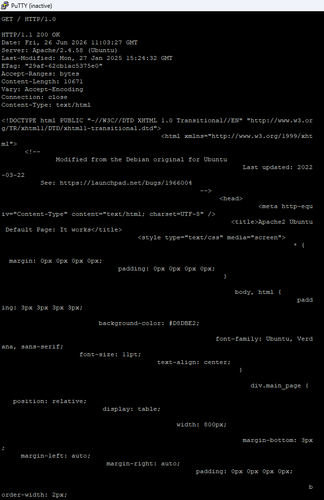
Скриншот 07: GET / HTTP/1.0
GET /hw2/index.php HTTP/1.1
Host: u82087.kubsu-dev.ru
Connection: close
Что делает: Запрашивает файл
index.php из каталога /hw2/. Скрипт
специально настроен так, что возвращает статус 404, но при этом
выполняет код и генерирует тело ответа.
Результат (скриншот l2.png):
HTTP/1.1 404 Not Found – задан самим
скриптом.
Content-Type: text/html; charset=UTF-8.
Array ( ) Привет, мир! (пустой массив
$_POST и строка).
Примечание: статус 404 не мешает получению содержимого – задание требует сам факт ответа и его анализ.
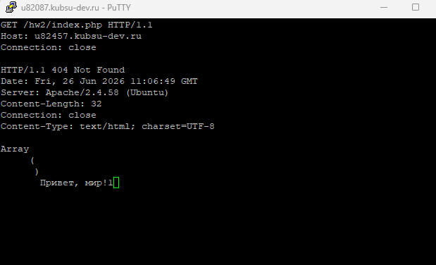
Скриншот 08: GET /hw2/index.php
HEAD /hw2/file.tar.gz HTTP/1.1
Host: u82087.kubsu-dev.ru
Connection: close
Что делает: Метод HEAD возвращает
только заголовки, без тела. Позволяет узнать размер файла из поля
Content-Length.
Результат (скриншот 09.png):
HTTP/1.1 200 OK – файл существует.Content-Length: 11335 – размер файла в
байтах.
Content-Type: application/x-gzip.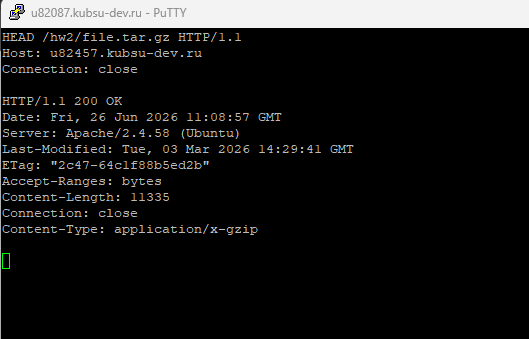
Скриншот 09: HEAD /hw2/file.tar.gz
HEAD /hw2/image.png HTTP/1.1
Host: u82087.kubsu-dev.ru
Connection: closeЧто делает: Аналогично пункту 3, определяем MIME-тип изображения.
Результат (скриншот 10.png):
HTTP/1.1 200 OK.Content-Type: image/png – медиатип PNG.
Content-Length: 10506 байт.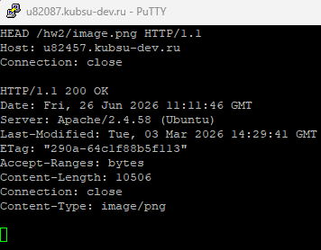
Скриншот 10: HEAD /hw2/image.png
POST /hw2/index.php HTTP/1.1
Host: u82087.kubsu-dev.ru
Content-Type: application/x-www-form-urlencoded
Content-Length: 12
Connection: close
comment=Hello
Тело запроса: comment=Hello (длина 12 байт).
Что делает: Отправляет POST-данные (имитация формы)
на index.php. Скрипт возвращает статус 404 (задано в
коде), но выводит содержимое массива $_POST.
Результат (скриншот 11.png):
HTTP/1.1 404 Not Found (задан скриптом).
Content-Type: text/html; charset=UTF-8.
Array ( [comment] => Hell ) Привет, мир! – значение
поля comment частично отобразилось (обрезано из-за
особенностей вывода).
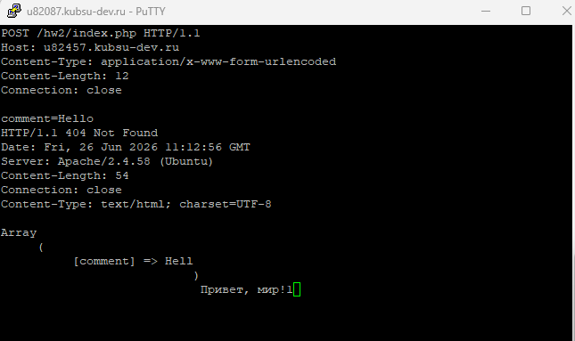
Скриншот 11: POST /hw2/index.php
GET /hw2/file.tar.gz HTTP/1.1
Host: u82087.kubsu-dev.ru
Range: bytes=0-99
Connection: close
Что делает: Заголовок
Range запрашивает только указанный диапазон байт –
первые 100 байт архива.
Результат (скриншот 12.png):
HTTP/1.1 206 Partial Content – частичное
содержимое.
Content-Range: bytes 0-99/11335.Content-Length: 100 – длина переданных данных.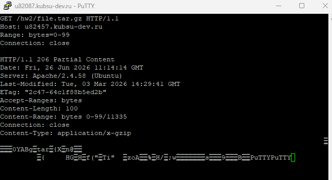
Скриншот 12: GET /hw2/file.tar.gz с Range
HEAD /hw2/index.php HTTP/1.1
Host: u82087.kubsu-dev.ru
Connection: close
Что делает: Запрос HEAD для получения только
заголовков. Позволяет узнать кодировку из поля
Content-Type.
Результат (скриншот 13.png):
HTTP/1.1 404 Not Found (задан скриптом).
Content-Type: text/html; charset=UTF-8 –
кодировка UTF-8 указана явно.
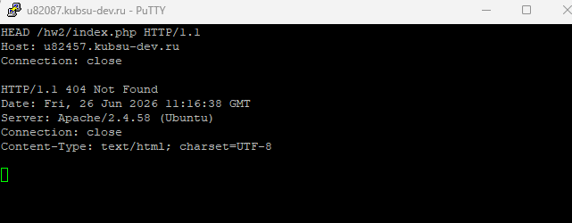
Скриншот 13: HEAD /hw2/index.php
После выполнения всех запросов и создания дополнительных скриншотов (02–07, 11000000.png и др.) они были добавлены в локальный репозиторий, закоммичены и отправлены на GitHub.
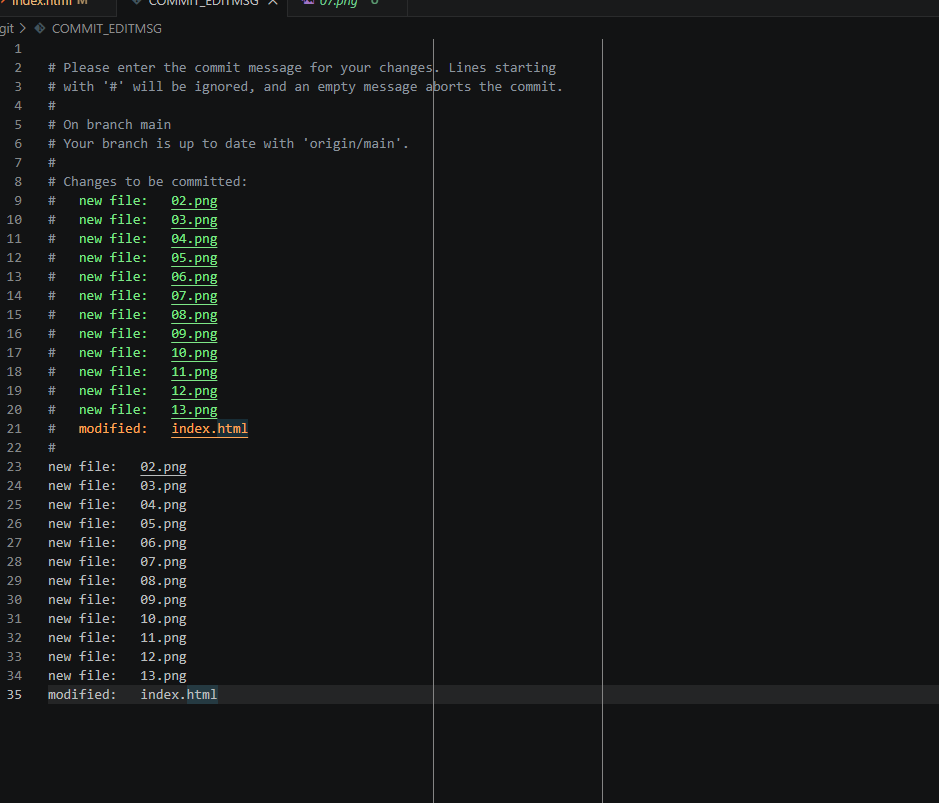
Скриншот 14: Добавление новых файлов и push
На сервере выполнен git pull в папке с репозиторием.
После получения обновлений файлы скопированы в каталог
~/www/hw2.
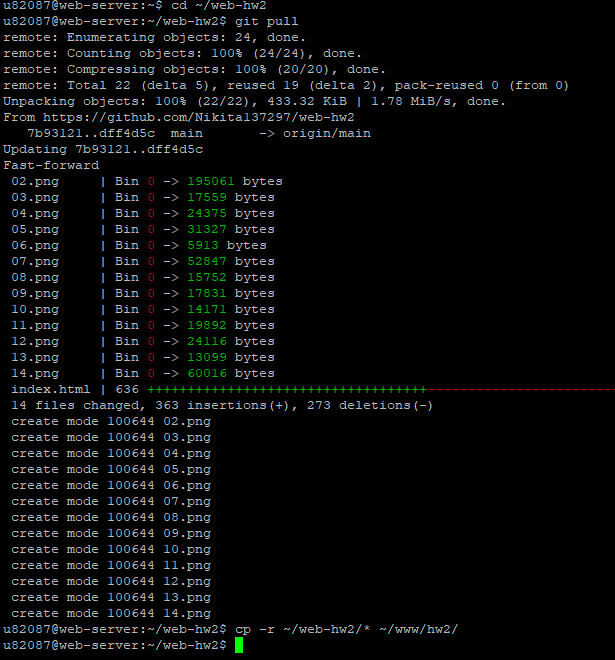
Скриншот 15: Обновление на сервере